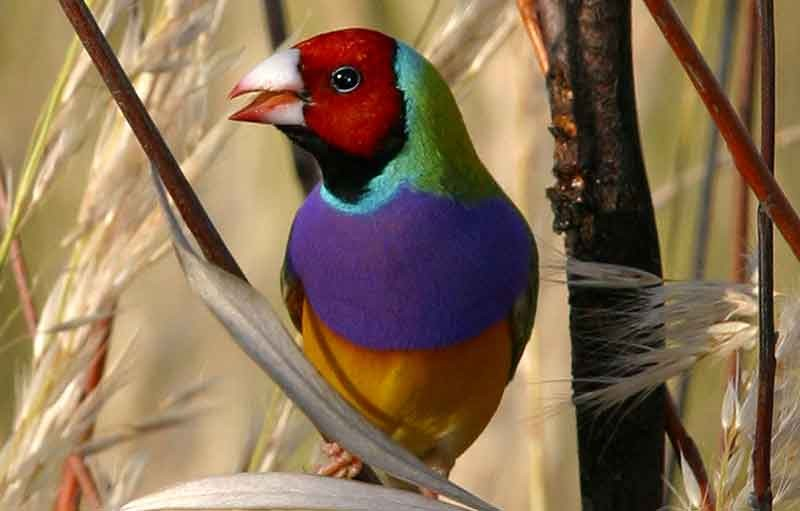
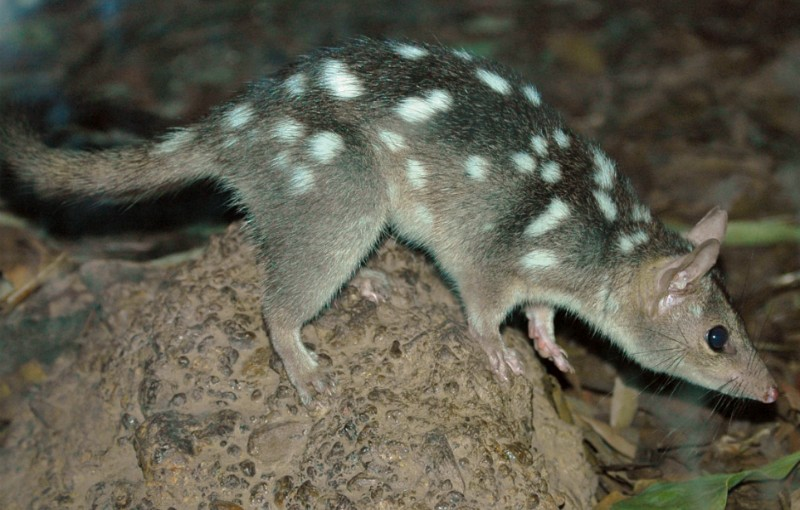
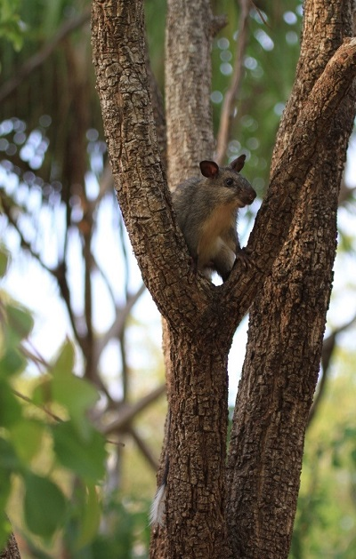
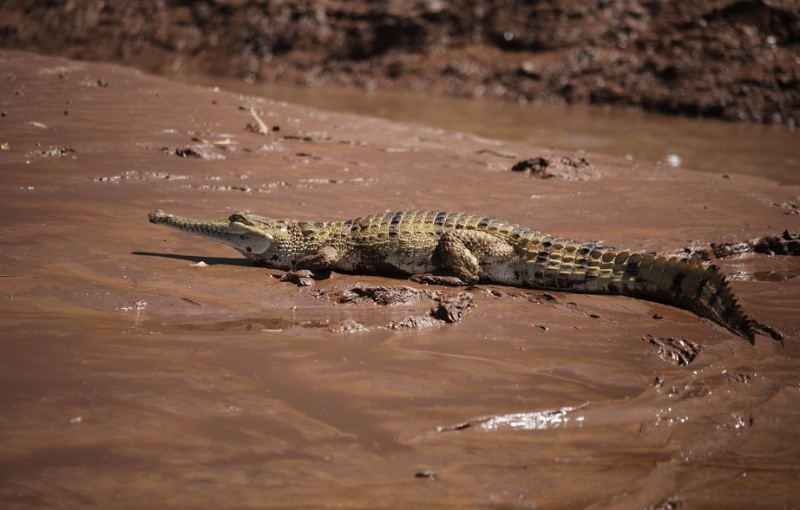
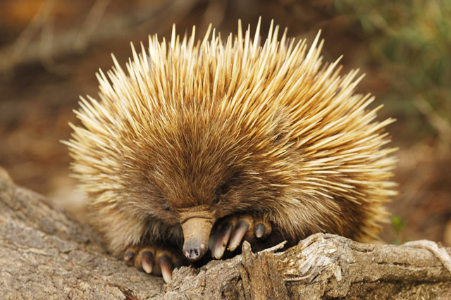
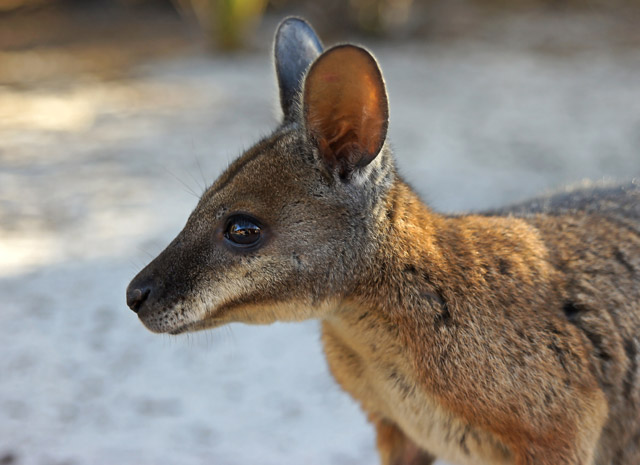
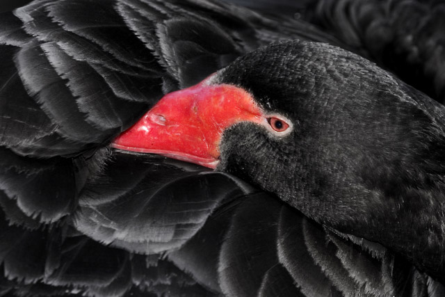
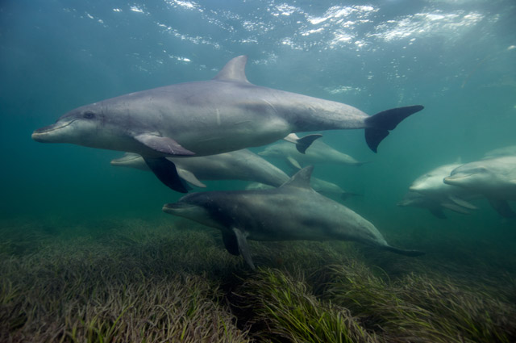
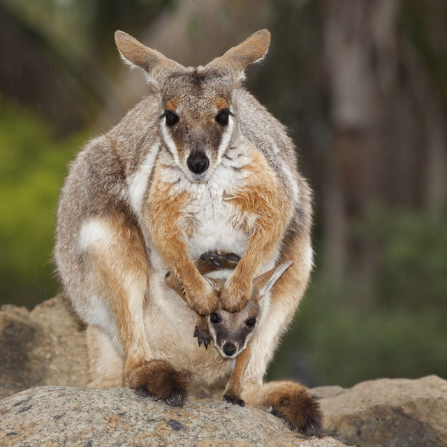

One thing everyone knows about Australia is that it’s home to some of the most interesting wildlife you’ll ever see. From cuddly and cute to absolutely terrifying, the animals of Australia are certainly fascinating and unique! It’s one of the very few countries where you’ll find marsupials and egg laying mammals! Below is a list of native Australian animals and some introduced species with a few facts thrown in so you can impress people. This list doesn’t include all Australian wildlife (yet) but definitely the most well known and a few you’ve probably never heard of as well
The region is home to an astonishing 460 species of birds, 110 mammals, 40% of Australia’s reptiles, and a surprising 225 species of freshwater fish – many of them endemic (unique to the area). While spectacular and raucous birds like cockatoos are hard to miss during the day, most mammals are nocturnal. About a third are bats and a fifth are native rodents but there are also many marsupials, including kangaroos and wallabies, bandicoots, possums, dunnarts and quolls.
   Immobilised by wonder, I gaze down at the most peculiar animal ever to take an interest in my foot. A long, black nose protrudes from a mass of thick spines about twice the size of a hedgehog and sniffs at my walking boot. To this echidna, it’s just another obstacle on the rocky coastal heathland that we’re both exploring. {img_alt} Well, I can see why they call Kangaroo Island a wildlife Mecca. This beguiling creature is a monotreme – related to neither hedgehog nor porcupine – and one of many endemic creatures to survive here, protected from mainland pressures by the swirling Southern Ocean. The echidna is a unique, insect-snatching animal with a few tricks up its thorny sleeve: for one, both males and females can form a pouch in which to carry their young, simply by contracting their abs. So, to tell a male from a female, you have to get past those spines and feel the soft underbelly. I’m not about to attempt that though, and instead watch it amble calmly into the scrub.
    